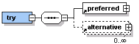

Because of uncertainties with network connections and performance issues in working with remote sites, it is good practice to provide for alternative content in case a service fails.
You can use the pipeline:try element to define preferred content and a series of alternatives. MCS attempts to serve the options you have specified in sequence.

The pipeline:preferred element is the first container processed. If it is not available, MCS moves on to any pipeline:alternative elements in the order you list them.
<pipeline:try>
<pipeline:preferred>
<pipeline:transform href="title.xsl" compilable="true">
<urid:fetch href="title.xml" />
</pipeline:transform>
</pipeline:preferred>
<pipeline:alternative>
<pipeline:content>
<p>There was a problem retrieving the information requested.</p>
</pipeline:content>
</pipeline:alternative>
</pipeline:try>
Related topics
About DCI